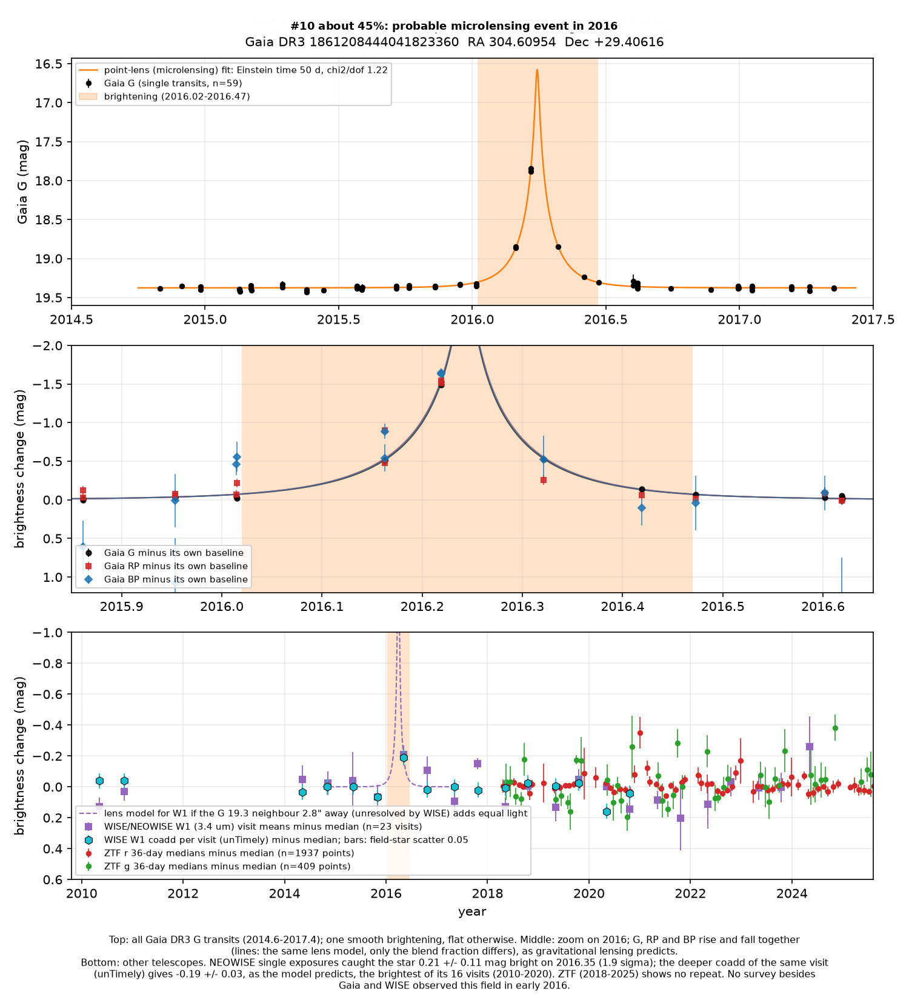
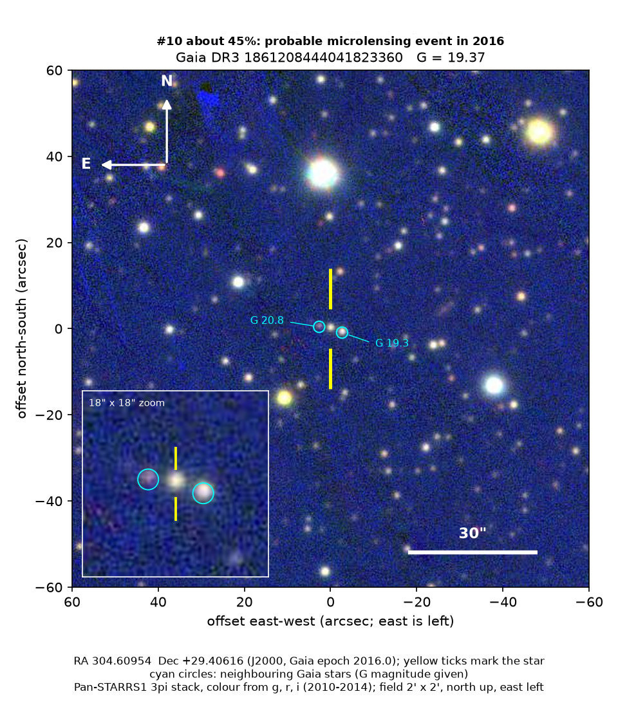

Professor of Mathematics
Paata Ivanisvili
Department of Mathematics, University of California, Irvine

Candidate 10: a star that brightened four-fold for a few weeks
Why this estimate. Five Gaia visits trace a clean lensing curve, but the only independent detection comes from a single WISE visit, and two close neighbours contaminate the colour and infrared measurements.
How to read the pictures. The finder chart shows a patch of sky two arcminutes across, about a fifteenth of the Moon’s width, with north up and east to the left. The star sits between the two yellow ticks, and the white bar is 30 arcseconds long. On a light curve the vertical axis is magnitude, a brightness scale on which larger numbers mean fainter stars, and it is drawn so that down means fainter. Orange shading marks the change. Each survey uses slightly different filters, so each is compared with its own normal level.
Dates such as 2016.22 are written as a year plus a fraction of a year: 2016.00 is the start of 2016, and 2016.50 is about halfway through it.

What changed. This is a faint star in Cygnus, 3.6 degrees from the mid-plane of the Milky Way. Its parallax, Gaia’s measure of distance, is 0.09 ± 0.23 milliarcseconds, too small to measure, so the star is probably more than 2,000 parsecs away. Gaia measured it 59 times between 2014 and 2017. It was steady except in early 2016, when five visits caught it rising and falling: it was 0.5 magnitudes brighter than normal at 2016.16, 1.5 magnitudes brighter (four times the light) at 2016.22, 0.5 magnitudes brighter at 2016.32, almost normal at 2016.42 and normal by 2016.47. ZTF observed the star from 2018 to 2025, and it never did this again.
WISE happened to visit at 2016.35. Its single exposures showed the star 0.21 ± 0.11 magnitudes brighter than normal, only a weak detection. The deeper combined image of that visit gives 0.19 ± 0.03 magnitudes brighter, which is what the lensing model predicts, and it is the brightest of 16 visits from 2010 to 2020. Stars of the same brightness in this field vary by about 0.05 magnitudes from visit to visit, and only about 1 in 200 of their measurements is that bright. Still, one infrared point cannot show the shape of the event.
Why it might matter. When a foreground star, or a dark object, passes almost exactly in front of a distant star, its gravity focuses the distant star’s light. The distant star then brightens and fades once, symmetrically, and by the same factor in every colour, and that is what this light curve looks like. The standard lensing model fits all 59 points, while a plain bump fits worse. The red and blue Gaia bands rise and fall together, and there is no repeat. Gaia’s classifier also labelled it as microlensing.
The event may be new. It is not in Gaia’s published list of 363 microlensing events, it has no Gaia alert, and it has no entry in SIMBAD, VSX (the variable-star index) or the Transient Name Server. It lies far outside the fields of the OGLE and KMTNet microlensing surveys. Microlensing is an expected kind of event, not an exotic one, and the value of this event would be as one more lens towards the disc of the Milky Way.
- Star
- Gaia DR3 1861208444041823360
- Location
- RA 304.60954°, Dec +29.40616° (J2000), in Cygnus, 3.6 degrees from the mid-plane of the Milky Way
- Distance
- parallax too small to measure; probably more than 2,000 parsecs away
- Brightness
- Gaia G = 19.4
- Probability
- This candidate is unconfirmed. The percentage under the title is an estimate of the chance that it is a real, previously unrecorded case of the kind described. The estimate has not been checked by outside experts. See the introduction to all twelve candidates.
- Caveat
- Gaia is the only telescope that sampled the shape of the event. One other WISE visit, at 2020.35, reads 0.16 magnitudes fainter than normal, so the infrared measurements have occasional outliers. Two fainter stars, 2.7 and 2.8 arcseconds away, add light in Gaia’s red and blue bands and in WISE, though they lie outside Gaia’s measuring window for G. At 2016.16, two measurements taken 106 minutes apart disagree by 0.4 magnitudes in the red band but agree in G. No lensed star changes that fast, so that red point is a glitch, and the colour fits are less tidy than the G fit. The peak at 2016.22 is consistent in all three bands, and Gaia flagged none of the measurements during the brightening as bad or noisy. Gaia’s earlier data release does not show the brightening in the star’s average brightness, but the same is true of two events that OGLE confirmed, so that test does not work for an event this short and this bright.
